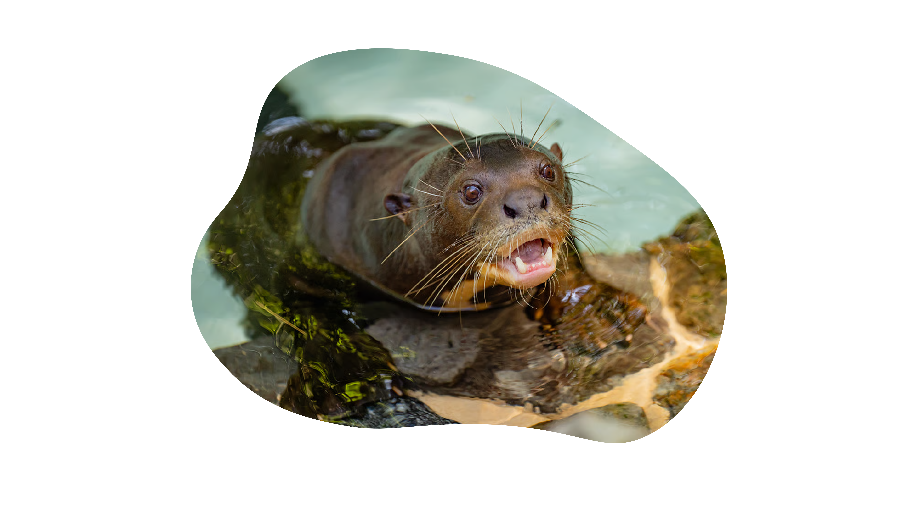

De reuzenotter (Pteronura brasiliensis), in Suriname ook wel grote waterhond genoemd, is een Zuid-Amerikaanse ottersoort. Dit dier is de grootste ottersoort en behoort samen met de veelvraat en de zeeotter tot de grootste marterachtigen. De reuzenotter is de enige soort uit het geslacht Pteronura.
De mannetjes bereiken een lengte van 1,5 tot 1,8 meter; de vrouwtjes blijven iets kleiner. De otter leeft in zoet water in een groot deel van Zuid-Amerika en is een bewoner van tropische gebieden. Het voedsel bestaat uit diverse waterdieren, vooral vis. De reuzenotter is een bedreigde diersoort die afhankelijk is van bescherming.
De reuzenotter is een lange, slanke otter met korte, stevige poten en een brede, ronde kop. Aan het einde van de poten zitten grote handen en voeten met vijf vingers of tenen, uitgerust met scherpe klauwen. Tussen de tenen en vingers zitten zwemvliezen, die reiken tot de toppen. De brede, afgeplatte kop heeft kleine ronde oren, die hoog en ver naar achter zijn geplaatst, en dikke snorharen. De snuit is stomp en zeer kort. De donkere ronde ogen bevinden zich hoog aan de voorzijde van het gezicht, en zijn naar voren gericht. De spleetvormige neusgaten kunnen onder water worden gesloten. De neus is volledig begroeid met fijn haar. De nek is lang en stevig, bij sommige volwassen mannetjes even breed als het gezicht. De dikke, gespierde staart is lansvormig, het breedst in het midden. Aan de wortel is de staart rond en gespierd, vanaf het midden tot aan de punt is hij aan de boven- en onderzijde afgeplat.